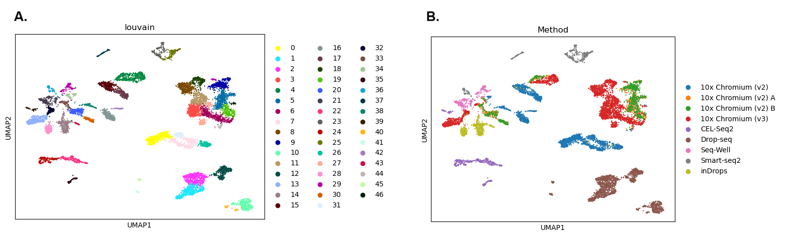
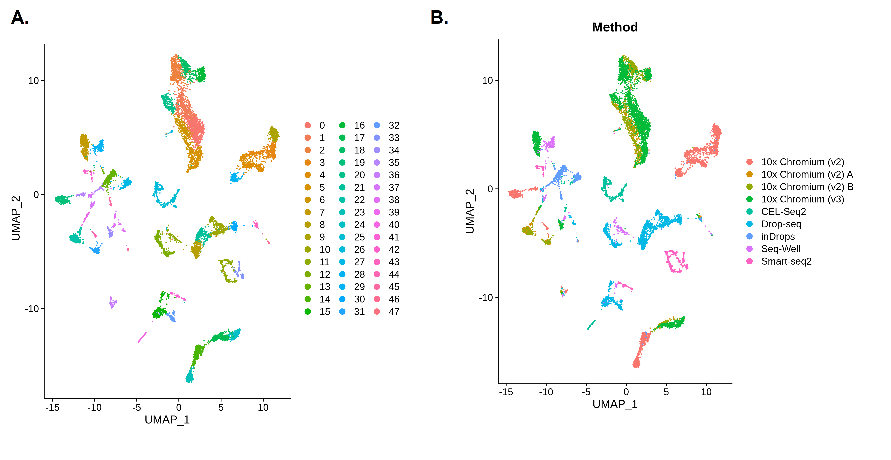
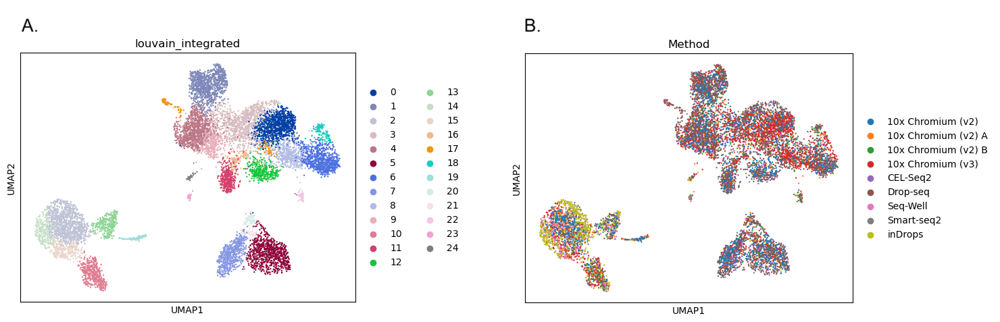
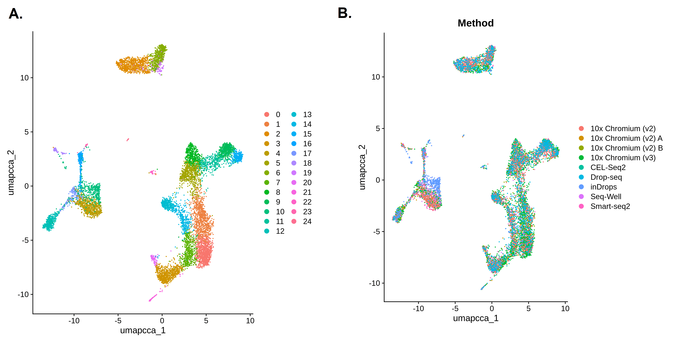
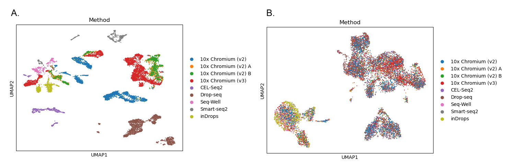
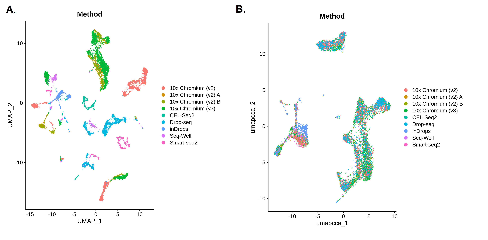
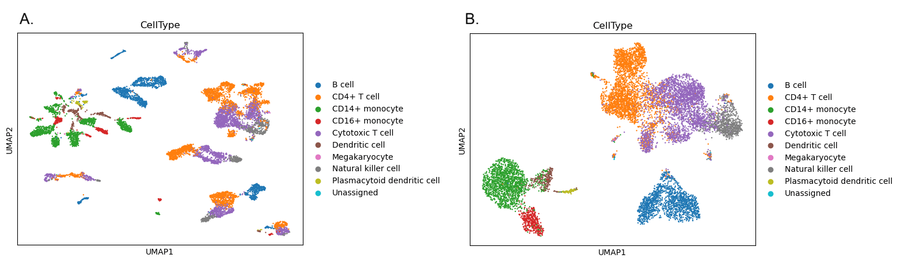
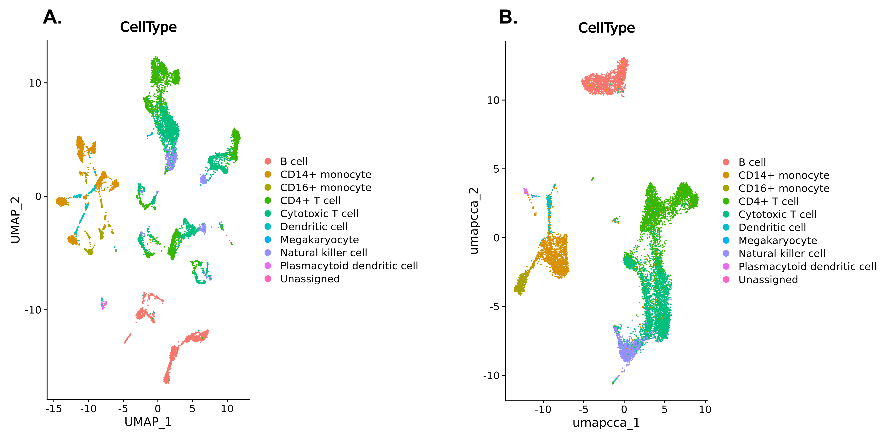

Batch Correction and Integration with Seurat or Scanpy
| Author(s) |
|
| Editor(s) |
|
| Reviewers |
|
OverviewQuestions:
Objectives:
What is the difference between batch correction and integration?
How can we perform batch correction or integration using the Scanpy and Seurat pipelines?
Requirements:
Understand what batch correction and integration are and how they are different
Know when to perform batch correction or integration on single cell data
Perform batch correction or integration using either the Scanpy or Seurat pipelines
- Introduction to Galaxy Analyses
- slides Slides: Clustering 3K PBMCs with Scanpy
- tutorial Hands-on: Clustering 3K PBMCs with Scanpy
- tutorial Hands-on: Clustering 3K PBMCs with Seurat
Time estimation: 2 hoursSupporting Materials:Published: Jul 9, 2026Last modification: Jul 9, 2026License: Tutorial Content is licensed under Creative Commons Attribution 4.0 International License. The GTN Framework is licensed under MITpurl PURL: https://gxy.io/GTN:T00583version Revision: 1
Single cell analyses can be complex. We may have data from different experimental batches, perhaps because we ran our experiments at different times, in different labs, or using different sequencing platforms. Sometimes we might want to combine multiple datasets, for example if we want to compare our own experimental data to a similar public dataset.
Running different batches or combined datasets through a clustering pipeline like Scanpy or Seurat without any pre-processing may not yield useful results. This is because clustering works by identifying genes with the largest differences in expression and grouping cells that share similar expression patterns. When data comes from multiple experimental batches or studies, however, the largest sources of variation often reflect technical differences between batches rather than the biology of interest like cell type. As a result, clusters may end up capturing batch or dataset identity rather than anything biologically meaningful.
To look beyond these technical differences, we can perform batch correction or integration. Both Scanpy and Seurat include tools for correcting differences between experimental batches and integrating datasets, and in practice we use the same tools for both. In this tutorial, you will learn how to use these tools in either pipeline. The choice of Scanpy or Seurat is yours.
CommentThis tutorial is based on the Introduction to scRNA-seq integration and Integrative analysis in Seurat v5 tutorials.
AgendaIn this tutorial, we will cover:
Important tips for easier analysis
Did you know we have a unique Single Cell Omics Lab with all our single cell tools highlighted to make it easier to use on Galaxy? We recommend this site for all your single cell analysis needs, particularly for newer users.
The Single Cell Omics Lab is a different view of the underlying Galaxy server that organises tools and resources better for single-cell users! It also provides a platform for communities to engage and connect; distribute more targeted news and events; and highlight community-specific funding sources.
Try it out!
- subdomain Europe: Single Cell Omics Lab
- subdomain USA: Single Cell Omics Lab
- subdomain Australia: Single Cell Omics Lab
Tools are frequently updated to new versions. Your Galaxy may have multiple versions of the same tool available. By default, you will be shown the latest version of the tool. This may NOT be the same tool used in the tutorial you are accessing. Furthermore, if you use a newer tool in one step, and try using an older tool in the next step… this may fail! To ensure you use the same tool versions of a given tutorial, use the Tutorial mode feature.
- Open your Galaxy server
- Click on the curriculum icon on the top menu, this will open the GTN inside Galaxy.
- Navigate to your tutorial
- Tool names in tutorials will be blue buttons that open the correct tool for you
- Note: this does not work for all tutorials (yet)
- You can click anywhere in the grey-ed out area outside of the tutorial box to return back to the Galaxy analytical interface
Warning: Not all browsers work!
- We’ve had some issues with Tutorial mode on Safari for Mac users.
- Try a different browser if you aren’t seeing the button.

When something goes wrong in Galaxy, there are a number of things you can do to find out what it was. Error messages can help you figure out whether it was a problem with one of the settings of the tool, or with the input data, or maybe there is a bug in the tool itself and the problem should be reported. Below are the steps you can follow to troubleshoot your Galaxy errors.
- Expand the red history dataset by clicking on it.
- Sometimes you can already see an error message here
View the error message by clicking on the bug icon galaxy-bug
- Check the logs. Output (stdout) and error logs (stderr) of the tool are available:
- Expand the history item
- Click on the details icon
- Scroll down to the Job Information section to view the 2 logs:
- Tool Standard Output
- Tool Standard Error
- For more information about specific tool errors, please see the Troubleshooting section
- Submit a bug report! If you are still unsure what the problem is.
- Click on the bug icon galaxy-bug
- Write down any information you think might help solve the problem
- See this FAQ on how to write good bug reports
- Click galaxy-bug Report button
- Ask for help!
- Where?
- In the User community chatspace in Slack in our #single-cell-users channel
- In the GTN Matrix Channel
- In the Galaxy Matrix Channel
- Browse the Galaxy Help Forum to see if others have encountered the same problem before (or post your question).
- When asking for help, it is useful to share a link to your history
Batch Correction or Integration?
We will often need to perform batch correction or integration when working with different experimental batches, donors, conditions, or datasets. We need to look beyond the technical differences between them and batch correction or integration are the techniques we use to do this. Both work by identifying cell subpopulations that are shared across groups, effectively matching cells of similar types or states.
The terms batch correction and integration are closely related and are often used interchangeably, since they refer to the same underlying process and use the same tools in the same way. The distinction is mainly one of context: batch correction typically refers to removing unwanted technical variation between groups from a single study, such as different experimental batches, while integration refers to aligning cell populations across separate datasets from multiple studies.
In this tutorial, you can choose whether you want to use the Scanpy or Seurat pipelines for clustering and batch correction. Scanpy and Seurat’s integration tools will create a dimensional reduction that captures the shared sources of variation across the batches or datasets. The dimensional reduction can be used to find clusters or produce visualisations such as UMAP.
Scanpy or Seurat?
Scanpy and Seurat are two of the most commonly used pipelines for analysing single cell data. Both include tools for preprocessing, dimensional reduction (such as PCA), neighbourhood graph construction, and clustering. Clustering is often a key goal in single cell analysis, as it groups cells with similar expression profiles. These groups frequently correspond to specific cell types or states, making the data easier to interpret and understand.
Although both pipelines follow the same basic steps, small differences in how those steps are implemented mean results can vary slightly depending on your choice. Broadly speaking, though, you should reach the same conclusions either way.
The main difference between these two pipelines is that Scanpy is written for Python while Seurat is written for R. If we were working in a Python or R environment, then we would need to choose the appropriate pipeline. However, since we’re working on Galaxy, we’re free to choose either set of tools.
Get data
Hands-on: Choose Your Own TutorialThis is a 'Choose Your Own Tutorial' (CYOT) section (also known as 'Choose Your Own Analysis' (CYOA)), where you can select between multiple paths. Click one of the buttons below to select how you want to follow the tutorial
Choose the single cell pipeline you want to use.
Hands On: Data Upload
Create a new history for this tutorial
Import the files from Zenodo or from the shared data library
https://zenodo.org/records/20574474/files/Input_Anndata.h5ad
- Copy the link location
Click galaxy-upload Upload at the top of the activity panel
- Select galaxy-wf-edit Paste/Fetch Data
Paste the link(s) into the text field
Press Start
- Close the window
As an alternative to uploading the data from a URL or your computer, the files may also have been made available from a shared data library:
- Go into Libraries (left panel)
- Navigate to the correct folder as indicated by your instructor.
- On most Galaxies tutorial data will be provided in a folder named GTN - Material –> Topic Name -> Tutorial Name.
- Select the desired files
- Click on Add to History galaxy-dropdown near the top and select as Datasets from the dropdown menu
In the pop-up window, choose
- “Select history”: the history you want to import the data to (or create a new one)
- Click on Import
Check that the datatype is
h5ad
- Click on the galaxy-pencil pencil icon for the dataset to edit its attributes
- In the central panel, click galaxy-chart-select-data Datatypes tab on the top
- In the galaxy-chart-select-data Assign Datatype, select
datatypesfrom “New Type” dropdown
- Tip: you can start typing the datatype into the field to filter the dropdown menu
- Click the Save button

Hands On: Data Upload
Create a new history for this tutorial
Import the files from Zenodo or from the shared data library
https://zenodo.org/records/20574474/files/Input_SeuratObject%20.rds
- Copy the link location
Click galaxy-upload Upload at the top of the activity panel
- Select galaxy-wf-edit Paste/Fetch Data
Paste the link(s) into the text field
Press Start
- Close the window
As an alternative to uploading the data from a URL or your computer, the files may also have been made available from a shared data library:
- Go into Libraries (left panel)
- Navigate to the correct folder as indicated by your instructor.
- On most Galaxies tutorial data will be provided in a folder named GTN - Material –> Topic Name -> Tutorial Name.
- Select the desired files
- Click on Add to History galaxy-dropdown near the top and select as Datasets from the dropdown menu
In the pop-up window, choose
- “Select history”: the history you want to import the data to (or create a new one)
- Click on Import
Check that the datatype is
rds
- Click on the galaxy-pencil pencil icon for the dataset to edit its attributes
- In the central panel, click galaxy-chart-select-data Datatypes tab on the top
- In the galaxy-chart-select-data Assign Datatype, select
datatypesfrom “New Type” dropdown
- Tip: you can start typing the datatype into the field to filter the dropdown menu
- Click the Save button
You should now have either an AnnData or SeuratObject dataset in your history. Both datasets contain the same information, but in the different formats required by the Scanpy and Seurat pipelines.
We are using a single cell dataset of human Peripheral Blood Mononuclear Cells (PBMCs) that was also used in Seurat’s Integrative analysis in Seurat v5 tutorial. The original study compared the results from seven different single cell and single nuclear techniques Ding et al. 2020.
Let’s take a look at our data before we begin the analysis to see whether we might need to perform batch correction or integration. While batches or combined datasets often do require correction, we should examine the data first to check whether it is necessary.
Correcting batch effects is important, but we also need to be careful not to overcorrect. Applying batch correction or integration when it isn’t needed, or overcorrecting when it is, risks removing the very biological differences we are interested in. Either way, it is important to interpret results carefully to determine whether they reflect true biological variation or technical artefacts.
Hands On: Inspect the Data
- Inspect AnnData ( Galaxy version 0.11.4+galaxy3) with the following parameters:
- param-file “Annotated data matrix”:
output(Input dataset)- “What to inspect?”:
General information about the object
Question
- How many cells and genes are in this dataset?
- If we click on the galaxy-eye of the new output in our history, we can see that this dataset contains information about the expression of 33,694 vars (genes) in 10,434 obs (cells).
Now we’ll take a closer look at the metadata describing how the dataset was produced. It can tell us whether the dataset is made up of different batches that might require correction.
Hands On: Inspect the Cell Metadata
- Inspect AnnData ( Galaxy version 0.11.4+galaxy3) with the following parameters:
- param-file “Annotated data matrix”:
output(Input dataset)- “What to inspect?”:
Key-indexed observations annotation (obs)- Count with the following parameters:
- param-file “from dataset”:
obs(output of Inspect AnnData tool)- “Count occurrences of values in column(s)”:
c['11']
Hands On: Inspect the Data
- Seurat Data Management ( Galaxy version 5.0+galaxy0) with the following parameters:
- “Method used”:
Inspect Seurat Object
- “Display information about”:
General
Question
- How many cells and genes are in this dataset?
- How many layers are in this dataset?
- If we click on the galaxy-eye of the new output in our history, we can see that this dataset contains information about the expression of 33,694 features (genes) in 10,434 samples (cells).
- Data in SeuratObjects are stored in layers. In this case, we only have one layer called
counts. Thecountslayer is the raw data that we’ll be using in this tutorial.
Now we’ll take a closer look at the metadata describing how the dataset was produced. It can tell us whether the dataset is made up of different batches that might require correction.
Hands On: Inspect the Cell Metadata
- Seurat Data Management ( Galaxy version 5.0+galaxy0) with the following parameters:
- “Method used”:
Inspect Seurat Object
- “Display information about”:
Cell Metadata- Count occurrences of each record with the following parameters:
- “Count occurrences of values in column(s)”:
c11This is the 11th column in your table, which contains theMethodmetadata
Question
- What does the
Methodcolumn represent in the cell metadata?- Do you think batch correction or integration is needed for this analysis?
- The dataset that we’re using comes from a study that compared different single cell techniques. The
Methodcolumn tells us which technique was used on each cell. Use the galaxy-eye to look at both outputs. The first one shows the metadata for all cells, withMethodin column 11. The second output shows how many times each method appeared in this column. We can see there are nine differentMethodbatches (as well as theMethodheading which the tool has counted too!). Three of the batches used the same 10X Chromium (v2) method, but they appear to have been processed separately as they have been placed in different batches. We have nine entires in theMethodcolumn that represent nine batches using seven different experimental techniuques.- Each experimental technique can be considered as its own experimental batch, as can the three different batches using the 10X Chromium (v2) method. Each of these batches was processed independently, which by itself can be enough to require batch correction, even if the same experimental protocol is used. Batches can vary simply because they were processed at different times or by different people in the same lab! In this case, we have an even stronger reason to believe that these batches will differ - we know that these batches were produced using different techniques. It seems likely that we’ll need to perform batch correction, but we’ll check what happen when we cluster without correction first. Batches often require correction, but we should always examine the data first to be sure. If we decide that correction is needed, we would consider this to be batch correction rather than integration because these data all came from the same original study.
CommentThe cell metadata is any information about the cells that the original authors have included with the dataset. As well as the cell barcode or identifier for each individual cell, the metadata will usually include information such as which donor or sample the cell came from, or which experimental group it was in. Sometimes, this metadata will include a lot of useful details, such as demographic information about human donors. This information can help us to better understand our results.
Clustering without Batch Correction
We suspect that batch correction will be needed because of the different technologies used to construct this dataset, but we’ll try clustering without any correction first. It is considered good practice to perform this uncorrected clustering to confirm whether batch correction is truly needed. We don’t want to perform a correction unless there are technical differences between batches that need to be removed, otherwise we risk overcorrecting our data and eliminating the biological differences we’re interested in. We will check whether we need to correct on the basis of Method. Comparing the results we get now with those we’ll get after batch correction should also help us to understand what batch correction is doing to our single cell data.
Since our focus is batch correction/integration, we won’t go into too much detail on the clustering process. We just want to see how the integration steps fit into the main clustering pipeline and understand the impact it has on our data. If you aren’t already familiar with this process, then you can learn more about clustering using the Scanpy or Seurat pipelines from the other single cell tutorials available on the GTN.
We’ll follow the default Scanpy pipeline here, except that we’ll use 30 PCs to build the neighborhood graph and cluster with a resolution of 2 as these were the parameters used in the original Seurat version of this tutorial.
Hands On: Cluster without Batch Correction
- Scanpy normalize ( Galaxy version 1.11.5+galaxy0) with the following parameters:
- param-file “Annotated data matrix”:
output(Input dataset)- “Method used for normalization”:
Normalize counts per cell, using 'pp.normalize_total'
- “Exclude (very) highly expressed genes for the computation of the normalization factor (size factor) for each cell”:
NoCommentWe will use the output from
Scanpy normalizein the following section when we perform batch correction.If you’re already familiar with the Scanpy clustering pipeline and you just want to try using the tool Scanpy remove confounders tools, then you can skip ahead to the Clustering after Integration step now. In a real analysis, it would be best to complete the clustering without batch correction first to check if it is needed.
- Scanpy Inspect and manipulate ( Galaxy version 1.11.5+galaxy0) with the following parameters:
- param-file “Annotated data matrix”:
anndata_out(output of Scanpy normalize tool)- “Method used for inspecting”:
Logarithmize the data matrix, using 'pp.log1p'- Scanpy filter ( Galaxy version 1.11.5+galaxy0) with the following parameters:
- param-file “Annotated data matrix”:
anndata_out(output of Scanpy Inspect and manipulate tool)- “Method used for filtering”:
Annotate (and filter) highly variable genes, using 'pp.highly_variable_genes'
- “Choose the flavor for identifying highly variable genes”:
Seurat- Scanpy Inspect and manipulate ( Galaxy version 1.11.5+galaxy0) with the following parameters:
- param-file “Annotated data matrix”:
anndata_out(output of Scanpy filter tool)- “Method used for inspecting”:
Scale data to unit variance and zero mean, using 'pp.scale'
- “Maximum value”:
10.0- Scanpy cluster, embed ( Galaxy version 1.11.5+galaxy0) with the following parameters:
- param-file “Annotated data matrix”:
anndata_out(output of Scanpy Inspect and manipulate tool)- “Method used”:
Computes PCA (principal component analysis) coordinates, loadings and variance decomposition, using 'pp.pca'
- “Type of PCA?”:
Full PCA- Scanpy Inspect and manipulate ( Galaxy version 1.11.5+galaxy0) with the following parameters:
- param-file “Annotated data matrix”:
anndata_out(output of Scanpy cluster, embed tool)- “Method used for inspecting”:
Compute a neighborhood graph of observations, using 'pp.neighbors'
- “Number of PCs to use”:
30- Scanpy cluster, embed ( Galaxy version 1.11.5+galaxy0) with the following parameters:
- param-file “Annotated data matrix”:
anndata_out(output of Scanpy Inspect and manipulate tool)- “Method used”:
Cluster cells into subgroups, using 'tl.louvain'
- “Flavor for the clustering”:
vtraag (much more powerful than igraph)
- “Resolution”:
2.0- Scanpy cluster, embed ( Galaxy version 1.11.5+galaxy0) with the following parameters:
- param-file “Annotated data matrix”:
anndata_out(output of Scanpy cluster, embed tool)- “Method used”:
Embed the neighborhood graph using UMAP, using 'tl.umap'
Now let’s take a look at our results. We’ll plot one version of the UMAP showing the clusters we’ve just identified and another coloured by Method to see if that might be influencing our results.
- Select
YesforMake an interactive plot?if you want to explore the data further. You’ll be able to colour the interactive plot byMethodor any of the other metadata categories.
Hands On: Visualise the Results
- Scanpy plot ( Galaxy version 1.11.5+galaxy0) with the following parameters:
- param-file “Annotated data matrix”:
anndata_out(output of Scanpy cluster, embed tool)- “Method used for plotting”:
Embeddings: Scatter plot in UMAP basis, using 'pl.umap'
- “Keys for annotations of observations/cells or variables/genes”:
louvain,Method- “Show edges?”:
No

Open image in new tabQuestion
- How many clusters did we identify?
- Are the batches well mixed?
- The first plot is coloured by cluster. We can see there are 47 clusters (Scanpy numbers the clusters starting from 0). That’s a lot - this is partly because we used a relatively high clustering resolution, but these fragmented clusters could also be a sign that something has gone wrong with our analysis.
- The second plot shows the UMAP coloured by
Method. Each colour here represents cells that were sequenced by a different experimental technique. We can see lots of clusters and patches of cells that are only made up of one colour - this suggests that our cells are grouping together by batch rather than a biologically relevant characteristic such as cell type. This is a problem as it means we’re not learning anything new about our cells since we already knew which batches they were in! If we want to find out something more interesting, we’ll need to get rid of the technical differences between the batches.
In the Seurat pipeline, we will split each of our batches into its own ‘layer’ within the SeuratObject before we begin the analysis. We could do the same with each dataset if we were integrating multiple datasets together. Splitting will affect some aspects of preprocessing but it also sets up the dataset for the integration tools, which expect each batch or dataset to be in its own layer.
Splitting our data into layers means that the Seurat preprocessing tools can work on each layer separately. Seurat can treat each layer as if it were a separate dataset during preprocessing. Each layer (in this case, each of our batches) will be normalised independently. We’ll also identify the highly variable genes within each batch, rather than across the whole dataset. Seurat will then create a single consensus list of highly variable genes to use for the whole dataset.
The other tools in the Seurat pipeline, such as RunPCA and FindClusters will still work on the entire dataset.
Splitting the batches into separate layers within our SeuratObject can act as a very mild form of batch correction. The separate preprocessing of each layer can reduce some of the technical differences between the batches. We have to wait for the results to see if this has been enough to eliminate these differences or if full batch correction is still needed.
Hands On: Split the Batches into Layers
- Seurat Integrate ( Galaxy version 5.0+galaxy0) with the following parameters:
- “Method used”:
Split data into layers using 'split'
- “Factor or group to use to split data”:
MethodCommentWe are splitting our data on
Methodas this is the column in our metadata that represents our batches. Each of the methods listed in this column will be split into its own layer.
Let’s take a look to see what we’ve done to our data.
Hands On: Inspect the Data
- Seurat Data Management ( Galaxy version 5.0+galaxy0) with the following parameters:
- param-file “Input file with the Seurat object”:
rds_out(output of Seurat Integrate tool)- “Method used”:
Inspect Seurat Object
- “Display information about”:
General
Question
- How many layers do we now have in our dataset?
- What do these layers represent?
- We can see that there are now 9 layers in our SeuratObject.
- We started out with one layer of raw data, called
counts. That layer has now been split up according toMethod. We now have ninecountslayers. Each layer represents one of the batches named in theMethodcolumn of the cell metadata. We can see the names of the methods in the layer names. For example, thecounts.Drop-seqlayer contains the raw counts produced using the Drop-seq technique. Seven different methods were used in this study, but one of them was applied to three different batches - you should be able to see three layers withChromium_v2in their names.
Now that we have split our data so that each batch is in its own layer, we will cluster it. We won’t perform any batch correction, so we’ll see if the differences in Method are causing any problems that might require correction.
We’ll follow the default Seurat pipeline here, except that we’ll use 30 PCs to build the neighborhood graph and cluster with a resolution of 2 as these were the parameters used in the original Seurat version of this tutorial. We’ll also give our clusters and UMAP more recognisable names as we’ll be running these tools again later, after batch correction.
CommentSeurat has another option for preprocessing - rather than use the three separate functions we’re using in this tutorial, you can use a single function called
SCTransformto preform normalisation, identification of variable genes, and scaling all in one go. You will find this option on Galaxy’s tool Seurat Preprocessing tool.If you use
SCTransformfor preprocessing, then you’ll need to chooseYesforUse SCT as Normalization Methodwhen you runIntegrateLayers. TheSCTransformnormalises the data in its own way, so we just need to let the tool know what to expect!The next step after identifying clusters would usually be to look for marker genes that are differentially expressed between clusters. If you perform integration/batch correction after using
SCTransform, then you will need to run thePrepSCTFindMarkersfunction before using tools such asFindMarkers. You’ll find this in the tool Seurat Integrate tool.The rest of the workflow will be the same as shown in this tutorial, but you will end up with slightly different results because
SCTransformhandles preprocessing in a different way than the three separate tools. If you want to learn more about these differences then you can follow the SCTransform route in the Clustering 3k PBMCs with Seurat tutorial.
Hands On: Cluster without Batch Correction
- Seurat Preprocessing ( Galaxy version 5.0+galaxy0) with the following parameters:
- param-file “Input file with the Seurat object”:
rds_out(output of Seurat Integrate tool)- “Method used”:
Normalize with 'NormalizeData'
- “Method for normalization”:
LogNormalize- Seurat Preprocessing ( Galaxy version 5.0+galaxy0) with the following parameters:
- param-file “Input file with the Seurat object”:
rds_out(output of Seurat Preprocessing tool)- “Method used”:
Identify highly variable genes with 'FindVariableFeatures'
- “Method to select variable features”:
vst- “Output list of most variable features”:
No- Seurat Preprocessing ( Galaxy version 5.0+galaxy0) with the following parameters:
- param-file “Input file with the Seurat object”:
rds_out(output of Seurat Preprocessing tool)- “Method used”:
Scale and regress with 'ScaleData'
- “Regress out a variable”:
No- “Features to scale”:
Variable Features- Seurat Run Dimensional Reduction ( Galaxy version 5.0+galaxy0) with the following parameters:
- param-file “Input file with the Seurat object”:
rds_out(output of Seurat Preprocessing tool)- “Method used”:
Run a PCA dimensionality reduction using 'RunPCA'CommentWe will use the output from
RunPCAin the following section when we perform batch correction.If you’re already familiar with the Seurat clustering pipeline and you just want to try using the tool Seurat Integrate tools, then you can skip ahead to the Clustering after Integration step now. In a real analysis, it would be best to complete the clustering without batch correction first to check if it is needed.
- Seurat Find Clusters ( Galaxy version 5.0+galaxy0) with the following parameters:
- param-file “Input file with the Seurat object”:
rds_out(output of Seurat Run Dimensional Reduction tool)- “Method used”:
Compute nearest neighbors with 'FindNeighbors'
- “Number of dimensions from reduction to use as input”:
30- Seurat Find Clusters ( Galaxy version 5.0+galaxy0) with the following parameters:
- param-file “Input file with the Seurat object”:
rds_out(output of Seurat Find Clusters tool)- “Method used”:
Identify cell clusters with 'FindClusters'
- “Resolution”:
2.0- “Algorithm for modularity optimization”:
1. Original Louvain- “Name for output clusters”:
unintegrated_clustersWarningMake sure that you change the default name for the clusters to
unintegrated_clusters!- Seurat Run Dimensional Reduction ( Galaxy version 5.0+galaxy0) with the following parameters:
- param-file “Input file with the Seurat object”:
rds_out(output of Seurat Find Clusters tool)- “Method used”:
Run a UMAP dimensional reduction using 'RunUMAP'
- “UMAP implementation to run”:
uwot- “Run UMAP on dimensions, features, graph or KNN output”:
dims
- “Number of dimensions from reduction to use as input”:
30- In “Advanced Options”:
- “Name for dimensional reduction”:
umap.unintegratedWarningMake sure that you change the default name for the UMAP results to
umap.unintegrated!
Now let’s take a look at our results. We’ll first plot a UMAP showing the clusters we’ve just identified. Then, we will colour this plot in by Method to see if that might be influencing our results.
Hands On: Visualise the Results
- Seurat Visualize ( Galaxy version 5.0+galaxy0) with the following parameters:
- param-file “Input file with the Seurat object”:
rds_out(output of Seurat Run Dimensional Reduction tool)- “Method used”:
Visualize Dimensional Reduction with 'DimPlot'
- “Name of reduction to use”:
umap.unintegrated- Seurat Visualize ( Galaxy version 5.0+galaxy0) with the following parameters:
- param-file “Input file with the Seurat object”:
rds_out(output of Seurat Run Dimensional Reduction tool)- “Method used”:
Visualize Dimensional Reduction with 'DimPlot'
- “Name of reduction to use”:
umap.unintegrated- In “Advanced Options”:
- “Factor to group cells by”:
Method

Open image in new tabQuestion
- How many clusters did we identify?
- Are the batches well mixed?
- The first plot is coloured by cluster. We can see there are 48 clusters (Seurat numbers the clusters starting from 0). That’s a lot - this is partly because we used a relatively high clustering resolution, but these fragmented clusters could also be a sign that something has gone wrong with our analysis.
- The second plot shows the UMAP coloured by
Method. Each colour here represents cells that were sequenced by a different experimental technique. We can see lots of clusters and patches of cells that are only made up of one colour - this suggests that our cells are grouping together by batch rather than a biologically relevant characteristic such as cell type. This is a problem as it means we’re not learning anything new about our cells since we already knew which batches they were in! If we want to find out something more interesting, we’ll need to get rid of the technical differences between the batches.
Clustering with Batch Correction
It looks like we do need to perform batch correction on our dataset. The Scanpy and Seurat pipelines both provide tools that can reduce the technical differences between batches. If we were combining multiple datasets, we could use the same tools in the same way to perform integration (i.e. to correct for technical differences between the datasets).
Two simple changes will enable us to perform batch corrections within the Scanpy pipeline.
First, we will go back to the step where we identified Highly Variable Genes (HVGs). This time, we will add in Method as the batch key. Now, the tool will select the most variable genes within each batch before merging them into a shared list. Doing this can prevent selection of batch-specific genes and acts as a lightweight form of batch correction.
Secondly, we will add in one more step using a tool called Harmony. We will use Harmony in between performing the PCA and constructing the neighborhood graph. Harmony will take the principal components and adjust them to remove batch effects. It will create a corrected low-dimensional representation that we can use instead of the uncorrected PCA reduction. We will then use X_pca_harmony instead of the PCA when we construct the neighbourhood graph.
CommentScanpy remove confounders inclludes several methods for batch correction/integration, which all work in different ways. You might want to experiment by using different methods to see how they affect the results. When you are working on your own data, it can be a good idea to try a few different integration methods to see which one produces the best results. The best integration or batch correction would be the one that eliminates the most of the technical differences between datasets or batches while producing biologically meaningful results. If we end up with completely unexpected results rather than clusters that match up well with known cell types, then we know that something has gone wrong!
Hands On: Recluster with Batch Correction
- Scanpy filter ( Galaxy version 1.11.5+galaxy0) with the following parameters:
- param-file “Annotated data matrix”:
anndata_out(output of Scanpy Inspect and manipulate tool)- “Method used for filtering”:
Annotate (and filter) highly variable genes, using 'pp.highly_variable_genes'
- “Choose the flavor for identifying highly variable genes”:
Seurat- “Specify the batch key”:
MethodComment: short descriptionWe will specify
Methodas the batch key. This means that Highly Variable Genes will be identified within each batch and then combined.- Scanpy Inspect and manipulate ( Galaxy version 1.11.5+galaxy0) with the following parameters:
- param-file “Annotated data matrix”:
anndata_out(output of Scanpy filter tool)- “Method used for inspecting”:
Scale data to unit variance and zero mean, using 'pp.scale'
- “Maximum value”:
10.0- Scanpy cluster, embed ( Galaxy version 1.11.5+galaxy0) with the following parameters:
- param-file “Annotated data matrix”:
anndata_out(output of Scanpy Inspect and manipulate tool)- “Method used”:
Computes PCA (principal component analysis) coordinates, loadings and variance decomposition, using 'pp.pca'
- “Type of PCA?”:
Full PCA- Scanpy remove confounders ( Galaxy version 1.11.5+galaxy0) with the following parameters:
- param-file “Annotated data matrix”:
anndata_out(output of Scanpy cluster, embed tool)- “Method used for plotting”:
Integrate multiple single-cell experiments with Harmony, using 'external.pp.harmony_integrate'
- “The name of the column in adata.obs that differentiates among experiments/batches”:
Method- Scanpy Inspect and manipulate ( Galaxy version 1.11.5+galaxy0) with the following parameters:
- param-file “Annotated data matrix”:
anndata_out(output of Scanpy remove confounders tool)- “Method used for inspecting”:
Compute a neighborhood graph of observations, using 'pp.neighbors'
- “Number of PCs to use”:
30- “Use the indicated representation”:
X_pca_harmonyCommentWe will use the corrected embedding, ‘X_pca_harmony’ to calculate the neighborhood graph. Make sure to enter this as the representation to use.
- Scanpy cluster, embed ( Galaxy version 1.11.5+galaxy0) with the following parameters:
- param-file “Annotated data matrix”:
anndata_out(output of Scanpy Inspect and manipulate tool)- “Method used”:
Cluster cells into subgroups, using 'tl.louvain'
- “Flavor for the clustering”:
vtraag (much more powerful than igraph)
- “Resolution”:
2.0- “Key under which to add the cluster labels”:
louvain_integratedCommentWe’ll use a different name for this clustering so that we don’t get confused. Enter ‘louvain_integrated’ as the key to add the cluster labels under. We’ll use this when we plot our integrated clusters.
- Scanpy cluster, embed ( Galaxy version 1.11.5+galaxy0) with the following parameters:
- param-file “Annotated data matrix”:
anndata_out(output of Scanpy cluster, embed tool)- “Method used”:
Embed the neighborhood graph using UMAP, using 'tl.umap'
Now let’s visualise the results again to see if the batch correction has worked. As before, we’ll make one plot coloured by cluster and another coloured by batch (Method). We’re hoping that the batches in that second plot will be more mixed together instead of forming separate groups like they did before batch correction.
- Select
YesforMake an interactive plot?if you want to explore the data further. You’ll be able to colour the interactive plot byMethodor any of the other metadata categories.
Hands On: Visualise the Results
- Scanpy plot ( Galaxy version 1.11.5+galaxy0) with the following parameters:
- param-file “Annotated data matrix”:
anndata_out(output of Scanpy cluster, embed tool)- “Method used for plotting”:
Embeddings: Scatter plot in UMAP basis, using 'pl.umap'
- “Keys for annotations of observations/cells or variables/genes”:
louvain_integrated,Method- “Show edges?”:
NoComment: short descriptionMake sure to use ‘louvain_integrated’ rather than ‘louvain’ for the cluster annotation to plot. This is the name we used for our integrated clusters.

Open image in new tabQuestion
- How many clusters did we identify?
- How well mixed are the batches?
- The first plot shows 25 clusters (remember that Scanpy starts from cluster 0!). Although the high resolution means we still have plenty of clusters, the batch correction has reduced the number. The clusters also look less fragmented than they did before. The reduced number of clusters doesn’t necessarily mean the analysis is better, but removing the batch-specific structure has allowed biologically similar cells from different batches to cluster together.
- When we colour in the plot by
Method, we can see that all the colours are mixed together across all of the clusters. We don’t have any clusters that contain only one colour. The batch correction has successfully removed the differences between the batches so that they’re no longer dominating the results.
We will now run Seurat’s batch correction tool - it’s called IntegrateLayers, but despite the name we can use the same tool to address differences between batches as we would for integrating datasets.
CommentSeurat Integrate provides several integration methods, which all perform the integration or batch correction in their own way. You might want to experiment by using different methods to see how they affect the results. When you are working on your own data, it can be a good idea to try a few different integration methods to see which one produces the best results. The best integration or batch correction would be the one that eliminates the most of the technical differences between datasets or batches while producing biologically meaningful results. If we end up with completely unexpected results rather than clusters that match up well with known cell types, then we know that something has gone wrong!
Hands On: Task description
- Seurat Integrate ( Galaxy version 5.0+galaxy0) with the following parameters:
- param-file “Input file with the Seurat object”:
rds_out(output of Seurat Run Dimensional Reduction tool)- “Method used”:
Apply integration methods with 'IntegrateLayers'
- “Integration method to use”:
CCA Integration- “Name for new dimensional reduction”:
integrated.ccaComment: Remember the nameMake sure you remember the name you’ve used for the new dimensional reduction - we’ll be using this later instead of the PCA we produced previously.
It’s good practice to rejoin our layers now, so that those separate layers/batches will end up together. We don’t actually need to do this now (as it won’t affect the clustering results), but it is important if we want to perform downstream analyses such as Differential Expression analysis.
Hands On: Task description
- Seurat Integrate ( Galaxy version 5.0+galaxy0) with the following parameters:
- param-file “Input file with the Seurat object”:
rds_out(output of Seurat Integrate tool)- “Method used”:
Join layers with 'JoinLayers'
Question
- How many layers are now in our dataset?
You might think that we should only have one layer in our dataset now, because we split it into nine layers that we have now rejoined. However, if you use Seurat Data Management to check, you’ll see that we actually have three layers now! This is because the preprocessing functions we ran (normalisation and scaling) created their own layers of data. We still have the original raw
countslayer, but we now have a normalised layer calleddataand a scaled one calledscale.dataas well.In fact, if you run Seurat Data Management on the previous dataset in your history, from before we rejoined the layers, you’ll see that it actually had 19 layers in it - each of the nine
countslayers we split the dataset was normalised into its owndatalayer. We then had thescale.datalayer too.
Now let’s try clustering our integrated data. We’ll repeat the steps we performed earlier, but this time we’ll be using the dimensional reduction produced by Integrate Layers instead of the PCA. The clustering will be based on the integrated embedding rather than the original PCA embedding. Let’s also give our clusters and UMAP results some new names to differentiate them from the uncorrected results.
Hands On: Task description
- Seurat Find Clusters ( Galaxy version 5.0+galaxy0) with the following parameters:
- param-file “Input file with the Seurat object”:
rds_out(output of Seurat Integrate tool)- “Method used”:
Compute nearest neighbors with 'FindNeighbors'
- “Name of reduction to use”:
integrated.cca- “Number of dimensions from reduction to use as input”:
30CommentMake sure to use
integrated.ccaas the reduction, not thepcawe made previously.- Seurat Find Clusters ( Galaxy version 5.0+galaxy0) with the following parameters:
- param-file “Input file with the Seurat object”:
rds_out(output of Seurat Find Clusters tool)- “Method used”:
Identify cell clusters with 'FindClusters'
- “Resolution”:
2.0- “Algorithm for modularity optimization”:
1. Original Louvain- “Name for output clusters”:
cca_clustersCommentMake sure that you know what name you used for your clusters as we’ll use this for the UMAP!
- Seurat Run Dimensional Reduction ( Galaxy version 5.0+galaxy0) with the following parameters:
- param-file “Input file with the Seurat object”:
rds_out(output of Seurat Find Clusters tool)- “Method used”:
Run a UMAP dimensional reduction using 'RunUMAP'
- “Name of reduction to use”:
integrated.cca- “UMAP implementation to run”:
uwot- “Run UMAP on dimensions, features, graph or KNN output”:
dims
- “Number of dimensions from reduction to use as input”:
30- In “Advanced Options”:
- “Name for dimensional reduction”:
umap.ccaCommentMake sure that you know what name you used for your UMAP results as we’ll use this for the plots!
Let’s see how the batch correction has changed our results. As before, we’ll make one plot coloured by cluster and then another coloured by batch (Method). We’re hoping that the batches in that second plot will be more mixed together instead of forming separate groups like they did before batch correction.
Hands On: Visualise the Results
- Seurat Visualize ( Galaxy version 5.0+galaxy0) with the following parameters:
- param-file “Input file with the Seurat object”:
rds_out(output of Seurat Run Dimensional Reduction tool)- “Method used”:
Visualize Dimensional Reduction with 'DimPlot'
- “Name of reduction to use”:
umap.cca- Seurat Visualize ( Galaxy version 5.0+galaxy0) with the following parameters:
- param-file “Input file with the Seurat object”:
rds_out(output of Seurat Run Dimensional Reduction tool)- “Method used”:
Visualize Dimensional Reduction with 'DimPlot'
- “Name of reduction to use”:
umap.cca- In “Advanced Options”:
- “Factor to group cells by”:
Method

Open image in new tabQuestion
- How many clusters did we identify?
- How well mixed are the batches?
- The first plot shows 25 clusters (remember that Seurat starts from cluster 0!). Although the high resolution means we still have plenty of clusters, the batch correction has reduced the number. The clusters also look less fragmented than they did before. The reduced number of clusters doesn’t necessarily mean the analysis is better, but removing the batch-specific structure has allowed biologically similar cells from different batches to cluster together.
- When we colour in the plot by
Method, we can see that all the colours are mixed together across all of the clusters. We don’t have any clusters that contain only one colour. The batch correction has successfully removed the differences between the batches so that they’re no longer dominating the results.
Comparing the Results
Let’s take another look at our UMAPs coloured by Method to see what the batch correction process has done to our data. In the ‘before’ picture, we can see that the different batches are forming their own clusters or patches in the UMAP plot, with very little mixing between colours. The differences between batches or methods are having a big impact on the clustering, which means that the biological differences we’re interested in are being missed. In the ‘after’ picture, we can see that the colours are all mixed up and the clusters are no longer separating out based on method. We have removed the technical differences between batches, so hopefully these clusters are now based on the biological differences we’re interested in.

Open image in new tab
Open image in new tabChecking the Clusters are Biologically Meaningful
Our plots suggest that the batch correction has successfully brought the different methods together, but this alone is not enough to confirm that it has worked. As always in single cell analysis, we also need to verify that the clusters we have found are biologically meaningful. Scanpy and Seurat will always produce clusters, but it is up to us to evaluate whether those results actually make sense.
In order to do this, we would usually take a closer look at the clusters to work out what they represent, for example by looking for clusters expressing genes that are known to be present in specific cell types. If you’ve worked through the Scanpy or Seurat clustering tutorials then you’ll already have seen how this can be done using the top differentially expressed genes or known markers of gene types. If you haven’t already completed these tutorials then they can tell you more about identifying cell types.
We don’t need to go through this process again now, because we have the annotations provided by the researchers who created this dataset. If you look back at the cell metadata table we created at the beginning of this tutorial, you’ll see there is an annotation called CellType. We can colour in our UMAPs using this annotation instead of the Method. If our clusters make biological sense, we should see that these cell types are clumped together because cells of the same type should be close to each other. If the cell types are all blended together across the entire UMAP (as with the methods in our integrated plots) then this would be a sign that something has gone wrong - we want the different methods to be mixed up together, but we’d like the biologically meaningful differences between cell types to be preserved. When we are performing batch correction or integration, there is a risk that we could over-integrate the data, eliminating the biological differences we’re interested in alongside the technical differences we wanted to remove.
You can rerun the UMAP plots yourself if you like, or just take a look at the plots below to see how the integration has grouped together the cells in a biologically meaningful way. The CellType annotation won’t match up exactly with our clusters (remember we used a high resolution to make lots of clusters!) but they certainly shouldn’t be scattered across the whole plot.

Open image in new tab
Open image in new tabConclusion
congratulations Well done, you’ve successfully performed batch correction to remove technical effects while clustering single cell data with Scanpy or Seurat. You might want to check your results against the example histories for the Scanpy or Seurat pipelines. You can also take a look at the whole workflow for Scanpy or Seurat.
In this tutorial, we’ve learned how to perform batch correction or integration when analysing single cell data with either the Scanpy or Seurat pipelines. If you want to learn more about these pipelines then you might want to try analysing a slightly trickier dataset in the Scanpy or Seurat case study tutorials.
You've Finished the Tutorial
Key points
Batch correction can remove some of the technical differences between experimental groups
Integration enables us to combine different datasets
Both the Scanpy and Seurat pipelines include tools that can be used for batch correction or integration
Frequently Asked Questions
Have questions about this tutorial? Have a look at the available FAQ pages and support channelsUseful literature
Further information, including links to documentation and original publications, regarding the tools, analysis techniques and the interpretation of results described in this tutorial can be found here.
References
- Ding, J., X. Adiconis, S. K. Simmons, M. S. Kowalczyk, C. C. Hession et al., 2020 Systematic comparison of single-cell and single-nucleus RNA-sequencing methods. Nature Biotechnology 38: 737–746. 10.1038/s41587-020-0465-8
Feedback
Did you use this material as an instructor? Feel free to give us feedback on how it went.
Did you use this material as a learner or student? Click the form below to leave feedback.

Citing this Tutorial
- Marisa Loach, Batch Correction and Integration with Seurat or Scanpy (Galaxy Training Materials). https://training.galaxyproject.org/training-material/topics/single-cell/tutorials/scrna_batch_correction/tutorial.html Online; accessed TODAY
- Hiltemann, Saskia, Rasche, Helena et al., 2023 Galaxy Training: A Powerful Framework for Teaching! PLOS Computational Biology 10.1371/journal.pcbi.1010752
- Batut et al., 2018 Community-Driven Data Analysis Training for Biology Cell Systems 10.1016/j.cels.2018.05.012
@misc{single-cell-scrna_batch_correction, author = "Marisa Loach", title = "Batch Correction and Integration with Seurat or Scanpy (Galaxy Training Materials)", year = "", month = "", day = "", url = "\url{https://training.galaxyproject.org/training-material/topics/single-cell/tutorials/scrna_batch_correction/tutorial.html}", note = "[Online; accessed TODAY]" } @article{Hiltemann_2023, doi = {10.1371/journal.pcbi.1010752}, url = {https://doi.org/10.1371%2Fjournal.pcbi.1010752}, year = 2023, month = {jan}, publisher = {Public Library of Science ({PLoS})}, volume = {19}, number = {1}, pages = {e1010752}, author = {Saskia Hiltemann and Helena Rasche and Simon Gladman and Hans-Rudolf Hotz and Delphine Larivi{\`{e}}re and Daniel Blankenberg and Pratik D. Jagtap and Thomas Wollmann and Anthony Bretaudeau and Nadia Gou{\'{e}} and Timothy J. Griffin and Coline Royaux and Yvan Le Bras and Subina Mehta and Anna Syme and Frederik Coppens and Bert Droesbeke and Nicola Soranzo and Wendi Bacon and Fotis Psomopoulos and Crist{\'{o}}bal Gallardo-Alba and John Davis and Melanie Christine Föll and Matthias Fahrner and Maria A. Doyle and Beatriz Serrano-Solano and Anne Claire Fouilloux and Peter van Heusden and Wolfgang Maier and Dave Clements and Florian Heyl and Björn Grüning and B{\'{e}}r{\'{e}}nice Batut and}, editor = {Francis Ouellette}, title = {Galaxy Training: A powerful framework for teaching!}, journal = {PLoS Comput Biol} }
Funding
These individuals or organisations provided funding support for the development of this resource
Congratulations on successfully completing this tutorial!
You can use Ephemeris's
shed-tools installcommand to install the tools used in this tutorial.shed-tools install [-g GALAXY] [-a API_KEY] -t <(curl https://training.galaxyproject.org/training-material/api/topics/single-cell/tutorials/scrna_batch_correction/tutorial.json | jq .admin_install_yaml -r)Alternatively you can copy and paste the following YAML
--- install_tool_dependencies: true install_repository_dependencies: true install_resolver_dependencies: true tools: - name: anndata_inspect owner: iuc revisions: b26b87f5a13c tool_panel_section_label: Single-cell tool_shed_url: https://toolshed.g2.bx.psu.edu/ - name: scanpy_cluster_reduce_dimension owner: iuc revisions: 795751257d82 tool_panel_section_label: Single-cell tool_shed_url: https://toolshed.g2.bx.psu.edu/ - name: scanpy_filter owner: iuc revisions: 2e6029e47eb5 tool_panel_section_label: Single-cell tool_shed_url: https://toolshed.g2.bx.psu.edu/ - name: scanpy_inspect owner: iuc revisions: a8d291df615d tool_panel_section_label: Single-cell tool_shed_url: https://toolshed.g2.bx.psu.edu/ - name: scanpy_normalize owner: iuc revisions: 2b6498d4c8c6 tool_panel_section_label: Single-cell tool_shed_url: https://toolshed.g2.bx.psu.edu/ - name: scanpy_plot owner: iuc revisions: 7f478b3258ec tool_panel_section_label: Single-cell tool_shed_url: https://toolshed.g2.bx.psu.edu/ - name: scanpy_remove_confounders owner: iuc revisions: 80fe16f87825 tool_panel_section_label: Single-cell tool_shed_url: https://toolshed.g2.bx.psu.edu/ - name: seurat_clustering owner: iuc revisions: 51eb02d9b17a tool_panel_section_label: RNA Analysis tool_shed_url: https://toolshed.g2.bx.psu.edu/ - name: seurat_data owner: iuc revisions: 4ec52a83ec82 tool_panel_section_label: RNA Analysis tool_shed_url: https://toolshed.g2.bx.psu.edu/ - name: seurat_integrate owner: iuc revisions: 74fa68f4e579 tool_panel_section_label: RNA Analysis tool_shed_url: https://toolshed.g2.bx.psu.edu/ - name: seurat_plot owner: iuc revisions: fee4b4eb0ef5 tool_panel_section_label: RNA Analysis tool_shed_url: https://toolshed.g2.bx.psu.edu/ - name: seurat_preprocessing owner: iuc revisions: 6bccf5f85f92 tool_panel_section_label: RNA Analysis tool_shed_url: https://toolshed.g2.bx.psu.edu/ - name: seurat_reduce_dimension owner: iuc revisions: 46ed93e8da30 tool_panel_section_label: RNA Analysis tool_shed_url: https://toolshed.g2.bx.psu.edu/